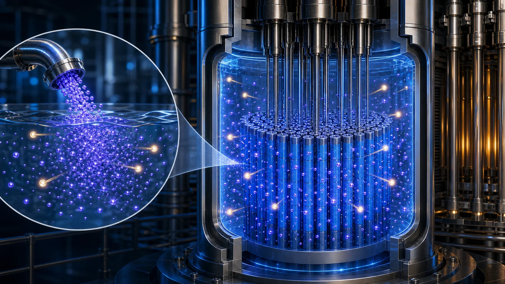
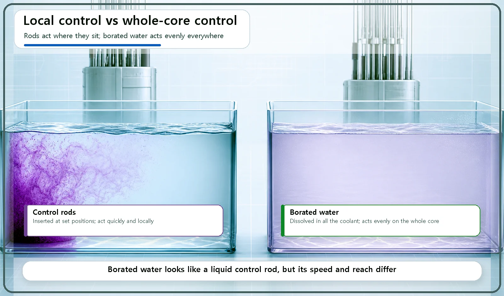
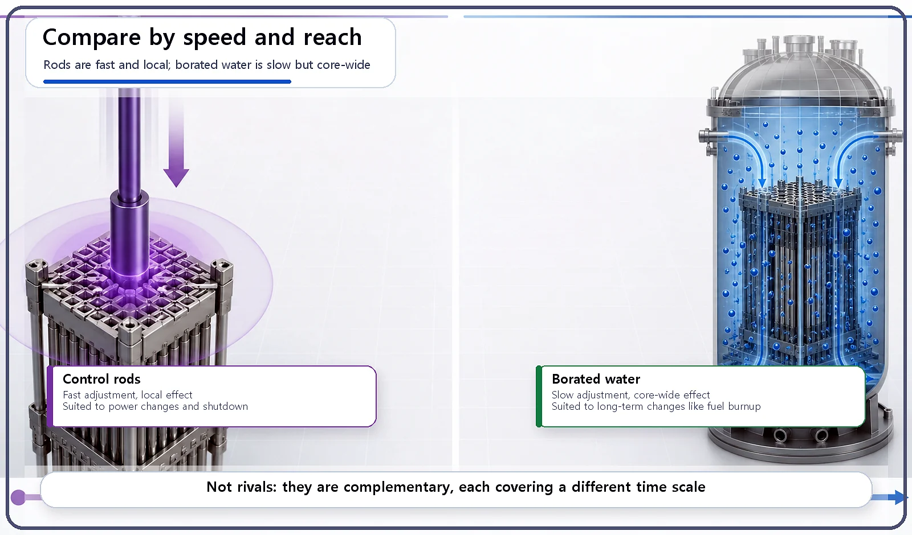

Reactor Components · 058
Like Bath Salts in the Tub — Is Borated Water Really a Liquid Control Rod?
Borated water shares the control rod's job of absorbing neutrons, but it spreads through the whole core and works on a much slower clock.

Borated water is coolant with boric acid dissolved in it; like a control rod, it absorbs neutrons and lowers reactivity. But control rods act quickly and locally, within seconds to minutes, while borated water acts slowly and evenly on the whole core, over hours to days. The two are partners, not substitutes.
Two ways to add bath salts
Drop a handful of colored bath salts into one corner of the tub and leave them there, and only that corner turns a deep color while the rest of the water stays clear. Stir them in until they dissolve, and the whole tub takes on the color evenly. Same bath salts, completely different result, depending on how you add them.
Borated water sounds at first like "a control rod in liquid form," but in practice it has more in common with those bath salts.
What is borated water?
Borated water is coolant (usually water) with boric acid, a boron compound that is very good at absorbing neutrons, dissolved in it.
That makes it fundamentally different from a control rod. A control rod is a solid rod pushed into a specific position. Borated water is a dissolved substance mixed evenly through the entire coolant.
"Liquid control rod" is half right
Borated water shares the control rod's purpose: it absorbs neutrons to lower reactivity. Make the boric acid more concentrated and reactivity falls; dilute it and reactivity rises. In principle that mirrors inserting and withdrawing a control rod. So far, the nickname fits pretty well.
Now for the other half. Reach is the first difference. A control rod acts locally, on the part of the core near where it is inserted. Borated water, mixed evenly through the coolant, acts uniformly on the whole core, exactly like bath salts dissolved through all the water instead of left in one corner.
Speed is the second. By moving in and out, control rods can change reactivity quickly, within seconds to minutes. Changing the boron concentration (adding boric acid, or filtering it out with purification equipment) takes much longer, so borated water suits slow changes that unfold over hours to days.

Each is good at something different
So the two are not rivals; they split the work. Control rods suit situations that need fast, local adjustment, such as changing power or shutting down in an emergency. Borated water suits slow changes across the whole core over the core's lifetime. A typical example: as the fuel is gradually used up, reactivity slowly declines over a long period, and the boron concentration is adjusted to compensate.
| Control rods | Borated water | |
|---|---|---|
| Form | Solid rod at a set position | Boric acid dissolved in the coolant |
| Reach | Local, near the rod | Uniform across the whole core |
| Speed | Seconds to minutes | Hours to days |
| Typical use | Power changes, emergency shutdown | Compensating slow reactivity loss as fuel is used up |

Why the combination matters
Thanks to borated water, there is less need to pack control rods densely all over the core. That gives designers much more flexibility in how they lay out the core and manage the neutron distribution. The boron concentration is one of the values that is continuously managed and adjusted while a reactor runs, and it is handled carefully through a dedicated system, the chemical and volume control system.
Two common mix-ups
"Borated water and control rods do the same job in the end, so either can replace the other." Only partly true. Their purpose, absorbing neutrons, is the same, but their speed and reach differ, so they are used in different situations.
"A reactor that uses borated water doesn't need control rods." No. Pressurized water reactors (PWRs), the most common light water reactor type, use control rods and borated water together, and the two work as complements.
Key takeaways
Borated water absorbs neutrons and lowers reactivity, just as control rods do. Where control rods are local and fast, borated water is core-wide and slow, so rods handle power changes and emergency shutdown while borated water handles the long, slow adjustments as fuel is used up. They are not competitors but partners that divide the work.